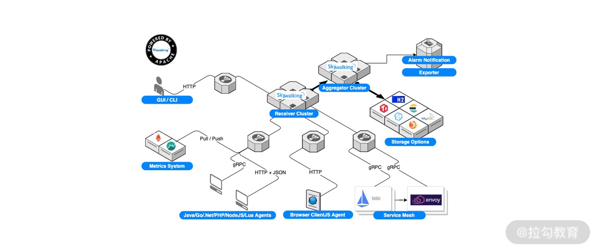

- 00 开篇词 吃透分布式数据库，提升职场竞争力.md.html
- 01 导论：什么是分布式数据库？聊聊它的前世今生.md.html
- 02 SQL vs NoSQL：一次搞清楚五花八门的“SQL”.md.html
- 03 数据分片：如何存储超大规模的数据？.md.html
- 04 数据复制：如何保证数据在分布式场景下的高可用？.md.html
- 05 一致性与 CAP 模型：为什么需要分布式一致性？.md.html
- 06 实践：设计一个最简单的分布式数据库.md.html
- 07 概要：什么是存储引擎，为什么需要了解它？.md.html
- 08 分布式索引：如何在集群中快速定位数据？.md.html
- 09 日志型存储：为什么选择它作为底层存储？.md.html
- 10 事务处理与恢复（上）：数据库崩溃后如何保证数据不丢失？.md.html
- 11 事务处理与恢复（下）：如何控制并发事务？.md.html
- 12 引擎拓展：解读当前流行的分布式存储引擎.md.html
- 13 概要：分布式系统都要解决哪些问题？.md.html
- 14 错误侦测：如何保证分布式系统稳定？.md.html
- 15 领导选举：如何在分布式系统内安全地协调操作？.md.html
- 16 再谈一致性：除了 CAP 之外的一致性模型还有哪些？.md.html
- 17 数据可靠传播：反熵理论如何帮助数据库可靠工作？.md.html
- 18 分布式事务（上）：除了 XA，还有哪些原子提交算法吗？.md.html
- 19 分布式事务（下）：Spanner 与 Calvin 的巅峰对决.md.html
- 20 共识算法：一次性说清楚 Paxos、Raft 等算法的区别.md.html
- 21 知识串讲：如何取得性能和可扩展性的平衡？.md.html
- 22 发展与局限：传统数据库在分布式领域的探索.md.html
- 23 数据库中间件：传统数据库向分布式数据库的过渡.md.html
- 24 现状解读：分布式数据库的最新发展情况.md.html
- 加餐1 概念解析：云原生、HTAP、图与内存数据库.md.html
- 加餐2 数据库选型：我们该用什么分布式数据库？.md.html
- 捐赠
06 实践：设计一个最简单的分布式数据库
本讲是一节知识回顾与拓展实践课。经过前几讲的学习，相信你已经对分布式数据库有了直观的认识，今天我们来总结一下模块一的学习成果，并通过一个实际案例来加深印象，我也会就前几讲中同学们提出的典型问题进行答疑。
分布式数据库核心总结
现在让我们来总结一下第一模块的核心知识。
这个模块介绍了什么是分布式数据库。主要从历史发展的角度，介绍了传统数据库的分布式模式、大数据背景下的分析型分布式数据库，而后以去 IOE 为背景聊到了数据库中间件，以及开源数据库模式，接着说到了 DistributedSQL 与 NewSQL，最后介绍了 HTAP 融合型数据库，它被看作是分布式数据库未来发展的趋势。
通过第 1 讲的学习，我想你不仅了解了分布式数据库由合到分、再到合的发展历史，更重要的收获是知道了到底什么是分布式数据库，这个最根本的问题。
从广义上讲，在不同主机或容器上运行的数据库就是分布式数据库，故我们能看到其丰富的产品列表。但是，正是由于其产品线过于丰富，我不可能面面俱到地去讲解所有知识点。同时由于数据库在狭义上可以被理解为 OLTP 型交易类数据库，因此本课程更加聚焦于 DistributedSQL 与 NewSQL 的技术体系，也就是 OLTP 类分布式数据库。在后续的模块中我会着重介绍它们涉及的相关知识，这里给你一个预告。
同时，这一模块也点出了分片与同步两种特性是分布式数据库的重要特性。
我们还一起学习了关于 SQL 的历史沿革，了解了什么是 NoSQL。这部分主要是对一些历史性的概念进行的“拨乱反正”，说明了NoSQL 本身是一个营销概念。而后我们介绍了 NewSQL、DistributedSQL 的特点。如前所述，这其实才是本课程所要学习的重点。
SQL 的重要性如我介绍的那样，这使得它的受众非常广泛。如果数据库想要吸引更多的用户，想要在影响力上或在商业领域寻求突破，那 SQL 可以说是一个必然的特性。反之，如果是专业领域的分布式数据库，那么 SQL 就不如分片与同步这两个特性重要了。
在分片那一讲中，我们首先学习了分片的意义，它是分布式数据库提高数据容量的关键特性。我们学习了主要的分片算法，包括范围分片与哈希分片；也介绍了一些优化方法；最后用 Apache ShardingShpere 的例子来直观介绍了分片算法的应用，包含了分布式唯一 ID 的生成算法等相关内容。
数据分片是分布式数据库两个核心内容之一，但其概念是比较直观的。学习难度相比数据同步来讲不是很大。
我们会经常遇到一个问题：设计一套分库分片的结构，保证尽可能少地迁移数据库。其实这个需求本质上在分布式数据库语境下是毫无意义的，自动弹性的扩缩数据库节点应该是这种数据库必要特性。过分地使用分片算法来规避数据库迁移固然可以提高性能，但总归是一种不完整的技术方案，具有天然的缺陷。
模块一的最后我们学习了同步数据的概念。同步其实是复制+一致性两个概念的综合。这两个概念互相配合造就了分布式数据库数据同步多样的表现形式。其中，复制是它的前提与必要条件，也就是说，如果一份数据不需要复制，也就没有所谓一致性的概念，那么同步技术也就不存在了。
在同步那一讲中，最先进入我们视野的是异步复制，这类似于没有一致性的参与，是一种单纯的、最简单的复制方式。后面说的其他的同步、半同步等复合技术，多少都有一致性概念的参与。而除了复制模式以外，我们还需要关注诸如复制协议、复制方式等技术细节。最后我们用 MySQL 复制技术的发展历程，总结了多种复制技术的特点，并点明了以一致性算法为核心的强一致性复制技术是未来的发展方式。
接着我们介绍了一致性相关知识，这是模块一中最抽象的部分。因为 CAP 理论与一致性模型都是抽象化评估分布式数据库的工具。它们的好处之一就是可以是帮助我们快速评估数据库的一致性，比如一个数据库号称自己是线性一致的 CP 数据库，那么对于其特性，甚至大概的实现方式，我们就会心中有数了；另一个益处就是设计数据库时，你可以根据需要解决的问题，设计数据库一致性方面的特点。
CAP 理论首先要明确，其中的C 指的是一致性模型中最强的线性一致。正因为是线性一致这样的强一致，才不会同时满足 CAP 三个特性。同时要注意可用性和高可用性的区别，可用性是抽象评估概念，网络分区后，每个分区只有一个副本，只要它提供服务，我们就可以说它其实是可用的，而不能说它是高可用。最后我提到了世界上只有 CP 和 AP 两种数据库，因为 P，即网络分区是客观规律，无法排除，不会存在 CA 类数据库。
说完了 CAP 理论后，我介绍了一致性模型。它来源于共享内存设计，但其理论可以被分布式数据库乃至一般的分布式系统所借鉴。你需要知道，这部分介绍的三种一致性都是强一致性，其特点解决了复制部分提到的复制延迟，使用户不管从哪个节点写入或查询数据，看起来都是一致的。另外，这三种一致性又是数据一致，与其相对的还有客户端一致，这个我会在之后的分布式模块中具体介绍。
最后，作为数据库，一个重要的概念就是事务。它与一致性是什么关系呢？其实事务的 ACID 特性中，AID 是数据库提供的对于 C 的保证。其中 I，即隔离性才是事务的关键特性。而隔离性其实解决的是并行事务的问题，一致性模型研究是单对象、单操作的问题，解决的是非并行的事务之间的问题。故隔离性加上一致性模型才是分布式数据库事务特点的总和。
至此，我们总结了模块一主要的内容。那么学习了这些知识后，除了可以帮助你评估分布式数据库外，还有什么用呢？现在让我们来试着设计一个分布式数据库吧。
为什么要自己实现分布式数据库？
分布式数据库，特别是 NoSQL 和 NewSQL 数据库，是目前主要的发展方向。同时，这两种数据库的品种也极为丰富。其中很多都是针对特定场景服务的，比如 NoSQL 中 Elasticsearch 针对的是搜索场景，Redis 针对缓存场景。而 NewSQL 更是百花齐放，如国内的滴滴、字节跳动等企业，都针对自己的业务特点实现了 NewSQL 数据库。更不要说如 BAT、Google 这样的大厂，他们都有自己的 NewSQL 类数据库。
这背后的动力来源于内驱需求与外部环境，这两者共同叠加而产生了目前这种局面。
内驱需求是，随着某种特定业务的产生并伴随其使用规模的扩大，从数据库这种底层解决该问题的需求逐步强烈。因为从数据库层面可以保证写入和查询满足某种一致性特性，而分布式数据库天然的服务化特性，又给使用者带来极大便利，从而可以加速这类业务快速发展。
外部环境是，分布式数据库使用的技术逐步成熟化，且可选开源产品众多。早先构造数据库的一个难点是，几乎所有涉及的技术类别都需要从基础开始构建，比如 SQL 解析、分布式协议和存储引擎等。而目前，有众多的开源项目、丰富的技术路线可供挑选，这样就大大降低了构造分布式数据库的门槛。
以上两点互相作用，从而使现在很多组织和技术团队都开始去构建属于自己的分布式数据库。
设计分布式数据库案例
熟悉我的朋友可能知道，我另外一个身份是 Apache SkyWalking 的创始成员，它是一个开源的 APM 系统。其架构图可以在官网找到，如下所示。

可以看到其中的 Storage Option，也就是数据库层面可以有多种选择。除了单机内存版本的 H2 以外，其余生产级别的数据库均为分布式数据库。
选择多一方面证明了 SkyWalking 有很强的适应能力，但更重要的是目前业界没有一款数据库可以很好地满足其使用场景。
那么现在我们来尝试给它设计一个数据库。这里我简化了设计流程，只给出了需求分析与概念设计，目的是展示设计方式，帮助你更好地体会分布式数据库的关键点。
需求分析
我们先来介绍一下 SkyWalking 处理数据的特点。
由于 SkyWalking 的 APM 特性，其对写入有很高的诉求。不管是最早使用的 HBase，还是现在的主力存储 Elasticsearch，都对写入很友好。为了保证数据写入高速且一致，OAP 节点层已经将计算指标进行了分片，也就是同一个指标是在相同的节点计算出来的。另外，该应用还采用了批量写入的模式，即每 10 秒进行一些批量写入。
SkyWalking 在使用场景下可以被看成一个查询少写入多的系统，查询很少发生，可以容忍一定的查询延迟。可用性方面是允许牺牲一定的可用性来换取性能的，比如目前对 Elasticsearch 的副本数量建议为 0，也就是说不进行数据复制。
如果开启复制，一致性方面要求也比较低。因为对于最大的工作负载写入来说，几乎不在写入的时候进行数据查询。但是一些低负载操作需要保证一致性，比如写入监控结果，写入后需要马上能查询出来。
由于查询协议的数据结构是非关系型的，且查询种类不多，故不需要一定支持 SQL 语句。
以上围绕着第一模块的核心内容，分析了 SkyWalking 的数据库应该具备的特点。现在让我们来针对需求分析中提到的要点，来设计针对 SkyWalking 的分布式数据库。
概要设计
首先 OAP 节点实际上已经做过哈希分片，这样我们可以将数据库节点与 OAP 节点组成一对一，甚至多对一（二次哈希）的结构，保障一个指标只写入一个数据库节点，这样就避免了数据迁移的麻烦。甚至我们可以将数据库节点与 OAP 节点部署在一起，从而最大限度降低网络延迟，同时提高资源的利用率。
对于弹性扩缩容，由于 SkyWalking 可以容忍部分数据不可用，可以直接增加分片节点，而无须迁移数据。如果想要保证老数据可以查询，可以将扩容时间点做记录；而后老数据查询老节点，新数据查询新节点。由于 SkyWalking 所有数据都有生命周期，一旦节点上旧的数据被删除，缩容场景下，该节点也可以被安全移除。
虽然 SkyWalking 不强制要求可用性，但一些数据如果一旦遭遇故障，也会给使用者带来不好的体验。特别是对于类似一天内的平均响应时间，一旦某个节点故障，在没有副本的情况下，该指标的数据将会有非常大的偏差。
一旦开启数据复制，应该使用什么一致性呢？这个问题需要区分来看。对于大量写入的指标数据来说，弱一致是满足条件的。因为写入和读取是由不同的端点发起的，且写入可以认为是单对象单操作，故弱一致就满足条件。
但告警场景却不是这样，告警产生后会通知相关人员，他们希望能马上查询到数据。如果采用弱一致，很可能无法查询。这里我们不需要使用特别强的一致性，采用因果一致就可以满足需求。实现方式是，将写入告警产生的数据时间戳页传递给用户。用户查询的时候将时间戳发送给一个数据库节点，如果该节点没有该时间戳的数据，它会尝试请求其他节点去同步。
最后关于查询接口，由于不一定需要 SQL，故我们可以使用简单的 RESTful 风格的 API 去实现查询和写入。但为了写入高效，可以独立设计写入协议，采用高效的二进制长连接的协议风格。
案例总结
以上就是根据第一模块学习的知识并结合 SkyWalking 的需求特点，设计的针对该系统的分布式数据库。设计层面我只强调了关键设计要点，并未进行详细说明。而关于底层的存储引擎，相信你在学习完模块二之后，会有自己的答案。
通过这个案例，我们可以看到设计分布式数据库只要结合分片和同步两个特点，就可以大概勾画出一个分布式数据库的外貌。你可以自己在工作和学习中，尝试设计分布式数据库来解决具有一定共性的数据问题。
留言答疑
开课以来，我收到了大家积极的反馈，其中有些问题非常专业，让我很惊喜。这里首先非常感谢你对课程的喜爱，你的积极反馈就是我写下去的动力。
这里我总结了一些共性问题，为你解答。
第一，有人提出了名词概念第一次出现应该给出全称的问题。
这里先向你道歉，出于个人习惯，我脑海中会将自己比较熟悉的概念直接以缩写或别名输出。这确实对第一次接触该知识的同学不太友好。在以后的写作中，我会尽量避免该问题。
第二个比较集中的问题是关于 MySQL InnoDB Cluster 是不是分布式数据库。
我在文章中提到，分布式的基础定义非常宽泛。如果从它出发，那么 InnoDB Cluster 是分布式数据库。但是从我们说的两个特性来看，它并不具有分片的特点，严格来说它不是分布式数据库，更不要说它是 NewSQL。但是我们可以为其引入分片的功能，比如利用分库分表中间件，以 InnoDB Cluster 为基础去构建分布式数据库，即 NewSQL 数据库。
这里我要强调一下，你不需要陷入概念区分的陷阱里，这不是考试，但现实生活比考试要复杂。把握住关键特点，才可以以不变应万变。
好了，答疑就先到这里。最后再次感谢你的积极反馈，希望在下一个模块结束后也能看到你精彩的留言。
总结
本讲首先回顾了模块一的主要内容，帮助你将各个部分串联起来，形成完整的知识拼图。而后通过一个案例介绍了如何使用这些知识设计一个分布式数据库，将所学知识应用到实际工作和学习中。
© 2019 - 2023 Liangliang Lee. Powered by gin and hexo-theme-book.